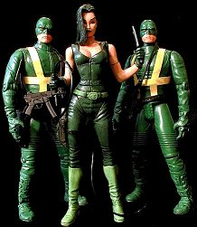

|
Viper, aka Madam Hydra, was made from a Danger Girls Natalia Kassel head and arms, Sidney Savage upper torso, and Matrix Trinity lower torso and legs. A simple Natalia Kassel repaint would have probably worked just as well, but I had already Frankensteined the Danger Girl parts for an abandoned Charlie's Angels project. The hard part was matching the skin tones on the torso. Also, the Natalia figure is a little too tall for 6" scale.
I sculpted some extra hair to hide part of her face, in trademark Viper fashion. I also used translucent green paint to change her eye color. The whip and pistol were random fodder box accessories. I made a couple of Hydra goons for company. Group shot below:
(Click on the picture for a larger version)

|